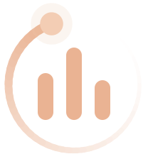

رصد و تحلیل فضای سیاسی اجتماعی به روایت حوزه علمیه خراسان
ویرایش ۵.۱۸.۰
عرصههای رصد

سامانه هوشمند جریان/صفحه نخست
بهروزرسانی خودکار هر ۲ ساعت
سامانه هوشمند جریان
سامانه هوشمند جریان، ابزار رصد و تحلیل فضای رسانهای ادارهی رصد و راهبری سیاسیاجتماعی حوزهی علمیهی خراسان است.
این سامانه بهصورت زنده کانالهای عمومی ایتا و تلگرام — اعم از خبرگزاریهای رسمی و شخصیتهای حوزوی — را پایش میکند، پستها را بر اساس دستهبندی موضوعی سازماندهی میکند و با تحلیل آماری، تصویری دقیق و بهروز از گفتمان سیاسیاجتماعی روز ارائه میدهد.
دسترسی به بخشهای سامانه دوسطحی است: مدیر و بیننده، هرکدام با رمز عبور اختصاصی خود.
حذف کانال «»؟
این کار غیرقابلبازگشته — همهی پستهای جمعآوریشده از این منبع هم برای همیشه پاک میشن.
تغییر رمز
ویرایش منبع
۱مشخصات منبع
۲موضوع
برای فیلتر «دستهبندی» و ستون «موضوع» در جدول کنشگران استفاده میشود.
۳در کدام بخشهای سایت نمایش داده شود؟
نبض فضای سیاسی اجتماعی به روایت حوزه علمیه خراسان
عرصههای رصد و پایش
اخبار و رویدادها
یادداشتها
درباره حوزه
کنشگری مجازی
برنامه مدارس
جریان این پنج عرصه را بهصورت جداگانه رصد و پایش میکند: اخبار و رویدادهای خبرگزاریها، یادداشتهای مربوط به افراد و مجموعههای تأثیرگذار، اخبار سیاسیاجتماعی پایگاههای حوزوی همراه با آنچه دربارهی حوزه گفته میشود، کنشگری فضای مجازی و برنامههای آموزشی مدارس. هر عرصه با منبع داده و روش پایش مخصوص به خودش دنبال میشود.
اخبار و رویدادها، کنشگری مجازی، مدارس و افراد را در یک سامانهی واحد و بهروز دنبال میکنیم. هر عرصه با روش پایش مخصوص به خودش رصد میشود تا هیچ تحولی در فضای سیاسیاجتماعی از دید جریان دور نماند.
تحلیل تخصصی
با نگاه جامعهشناسی سیاسی، رویدادها را از دل دادهها استخراج و تحلیل میکنیم. حاصل این تحلیل در قالب بستهی تحلیلی جریان، هر شماره در اختیار مخاطب قرار میگیرد.
دسترسی اختصاصی
با سطحبندی دقیق نقشها، اطلاعات حساس فقط در اختیار افراد مجاز قرار میگیرد. مدیران و بینندگان هرکدام دسترسی متناسب با نیاز خود را دارند، بدون افشای دادههای حساس.
بسته تحلیلی جریان
بسته تحلیلی جریان، خلاصهای تحلیلی، دقیق و چندلایه از تحولات سیاسیاجتماعی است که سعی دارد نگاهی جامع را در اختیار مخاطب قرار دهد. این بسته شامل ۱۰ بخش است.
خط خبریتحلیل اخبار روزمهمترین اخبارنگاه جامعهشناسی سیاسیاصل ماجراتحلیل سازمانهایادداشت طلابخارج از دیدنبض افکارتحلیل اندیشگدهها
اطلاع از انتشار بسته تحلیلی جریان
شماره موبایل خود را ثبت کنید تا هر وقت شمارهی جدید «بسته تحلیلی جریان» منتشر شد، پیامک اطلاعرسانی برایتان ارسال شود.
برای بهتر شدن بستههای جریان به ما کمک کنید
خلاصهی هوشمند اخبار مهم و موضوعات پرتکرار ۶ ساعت اخیر، تولیدشده با هوش مصنوعی.
جستجوی هوشمند
موضوع:
همه
بازه زمانی
همه رسانهها
انتخاب رسانهها…
هنوز خبری از منابع خبری جمعآوری نشده.
انتخاب روزنامهها…
هنوز روزنامهای دریافت نشده.
فعلاً پروندهی موضوعی فعالی نیست.
خبرنامهی امروز
هنوز خبرنامهای منتشر نشده.
صفحه ۱ — ادعاها و شایعات
صفحه ۲ (ستون راست) — شبکههای اجتماعی و وبسایتها
صفحه ۲ (ستون چپ) — پروندههای موضوعی
اخبار منتخب (۶ الی ۱۲ ساعت اخیر)
تحلیل هوش مصنوعی هنوز آماده نشده — طبق زمانبندی روزی ۴ بار (۲، ۸، ۱۴ و ۲۰) بهروز میشه.
موضوعات پرتکرار
تحلیل هوش مصنوعی هنوز آماده نشده — طبق زمانبندی روزی ۴ بار (۲، ۸، ۱۴ و ۲۰) بهروز میشه.
جدیدترین ادعا یا شایعه
هنوز ادعا یا شایعهای ثبت نشده.
موجهای خبری (۱۲ ساعت اخیر)انتشار یک خبر در ۵ کانال یا بیشتر
پراکندگی زمانی انتشار خبر۲۴ ساعت اخیر، ساعتی
پرکارترین منابع۲۴ ساعت اخیر
هنوز گزارشی بارگذاری نشده.
یادداشتها و مطالب کانالهای معرفیشده بهعنوان چهرهی سیاسی.
مطلبی با این فیلتر پیدا نشد.
هنوز موردی در آرشیو بارگذاری نشده.
اخبار سیاسی و اجتماعی منتشرشده در پایگاههای خبری حوزوی.
بخش تحلیلی
هنوز مجلهای بارگذاری نشده.
چه چیزی میخواهید بارگذاری کنید؟
بارگذاری شمارهی جدید «بسته تحلیلی جریان»
موارد بارگذاریشده
بارگذاری بستهی تحلیلی یک نهاد
موارد بارگذاریشده
بارگذاری گزارش جدید مدارس
موارد بارگذاریشده
برای فعال شدن این بخش، فایل db/migration_036_announcements.sql باید یکبار در SQL Editor سوپابیس اجرا بشه.
اطلاعیهی جدید
اطلاعیهها
همهی کانالها و مدیران آنها
پستهای منتشرشدهی کانالهای کنشگر فضای مجازی، قابلفیلتر بر اساس کانال، دسته و زمان.
انتخاب کانالها…
جستجوی هوشمند
پستی با این فیلتر پیدا نشد.
هنوز کانالی برای «کنشگری مجازی» تگ نشده.
نام کانالبستر فعالیتصاحب کانالمخاطبفعالیتموضوعگروه
پشتیبان تنظیماتیک فایل از همهی تنظیماتی که با دست ساخته شدهاند؛ اگر دیتابیس خراب یا جابهجا شود یا چیزی اشتباهی حذف شود، با این فایل برمیگردند.
داخل فایل
داخل فایل نیست
پستها و روزنامهها (خودکار دوباره جمعآوری میشوند)
فایلهای بستههای تحلیلی و گزارشهای مدارس (PDF و عکسها)
رمزهای عبور (بعد از بازسازی دوباره تعیین میشوند)
مطالب انتخابشدهی پروندهها و خبرنامه (به پستها وابستهاند)
چطور از این فایل استفاده کنم؟
فایل را با Notepad (یا هر ویرایشگر متن) باز کنید و کل متن را کپی کنید.
در سوپابیس، پروژهی درست را باز کنید ← SQL Editor ← New query ← متن را بچسبانید ← Run.
فقط مواردی که در دیتابیس نیستند اضافه میشوند؛ چیزی که الان هست عوض یا پاک نمیشود. پس اجرای دوباره یا اجرا روی سایت فعلی بیخطر است.
روی پروژهی تازه، اول باید فایلهای ساختار دیتابیس (schema.sql و migrationها) اجرا شده باشند.
خروجی پستها
خروجی گزارش آنالیز
منابع
مدیریت منابعکانالها و سایتهایی که سامانه از آنها مطلب جمع میکند، و محل نمایش هرکدام در سایت
با کلیک روی هر منبع، مشخصات و بخشهایی از سایت که در آن نمایش داده میشود را ویرایش کنید.
برچسبهای منابع
موضوع منابعدر فیلتر «دستهبندی» و ستون «موضوع» جدول کنشگران
منطقههای جغرافیاییدر فیلتر «منطقه» تبهای اخبار
گروههای چهرهها و سازمانهاگروهبندی گالری لوگوها در بخش «یادداشتها»
گروهها (مثل حزب ۱ / حزب ۲) برای هر تب جداگانه تعریف میشوند. عضویت هر منبع در گروهها از پنجرهی ویرایش همان منبع تنظیم میشود و هر منبع میتواند عضو چند گروه باشد.
اخبار
میانبرهای جستوجوی وبسایتهادکمههای جستوجوی آماده در تب «وبسایتها»
هر میانبر یک نام و چند کلیدواژه (جدا با ویرگول) دارد. در تب «وبسایتها»، با کلیک روی میانبر، مطالبی نمایش داده میشوند که دستکم یکی از کلیدواژهها را در عنوان یا متن داشته باشند.
پروندههای موضوعیموضوعات تب «پروندههای موضوعی»
موضوعات موقت که هر چند روز یکبار عوض میشوند. کلیدواژههای هر موضوع (جدا با ویرگول) هر ۲ ساعت با کلیدواژههای هوش مصنوعی مطالب تازه تطبیق داده میشوند. فقط موضوعات فعال به بیننده نمایش داده میشوند؛ غیرفعالکردن یک موضوع، مطالبش را حذف نمیکند.
سرویسهای مرتبطسایتها و سرویسهایی که «جریان» برای کار کردن بهشون وابستهست. سبز یعنی در دسترس، زرد یعنی کُند، قرمز یعنی قطع یا خطا.
کارهای خودکارزمان آخرین خروجی هر کار و نتیجهی آخرین اجرای آن در گیتهاب. زرد یا قرمز یعنی باید بررسی بشه.
ورودهاورودهای ۳۰ روز اخیر به سایت. چون رمز مشترکه، فقط نقش (مدیر/بیننده)، دستگاه و IP معلومه، نه نام افراد. ورود خودکار کارهای گیتهاب نمایش داده نمیشه.
منابع بیخبرمنابع فعالی که بیش از ۳ روز هیچ مطلبی ازشون نیومده (احتمال خرابی آدرس یا بستهشدن کانال).
انقضای توکنهابعد از انقضا، کار مربوطه بیصدا از کار میافته؛ قبلش توکن جدید بساز.
فهرست کاربران
سطح دسترسی فعلاً فقط ثبت و نمایش میشود؛ ورود هنوز با رمز مشترک مدیر/بیننده است.
برای ثبت کاربران، فایل db/migration_037_app_users.sql باید یکبار در SQL Editor سوپابیس اجرا شود. (مشترکین فرم اطلاعرسانی همین حالا هم پایین دیده میشوند.)
اطلاعرسانی گروهی۰ نفر انتخاب شده
ارسال پیامکبهزودیارسال در ایتابهزودی
ارسال مستقیم از همینجا بعد از اتصال سامانهی پیامکی (و در صورت تصمیم، کانال ایتا) فعال میشود.